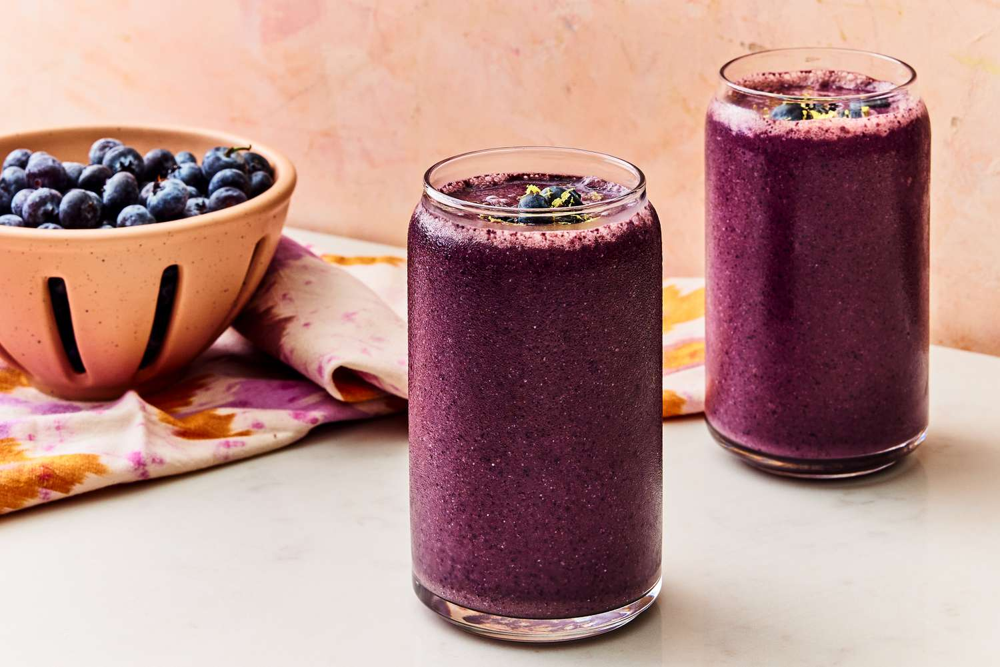

BLUEBERRY SMOOTHIE

DESCRIPTION
Blueberry smoothie recipes are a great way to use fresh or frozen berries, and this is a delicious one!
INGREDIENTS
- 1 cup blueberries (frozen or fresh)
- 1 (8 ounce) container plain yogurt
- ¾ cup 2% reduced-fat milk
- 2 tablespoons white sugar
- ½ teaspoon vanilla extract
- ⅛ teaspoon ground nutmeg
STEPS
- Blend blueberries, yogurt, milk, sugar, vanilla, and nutmeg in a blender until frothy, scraping down the sides of the blender if needed.
- Divide between 2 glasses and serve immediately.